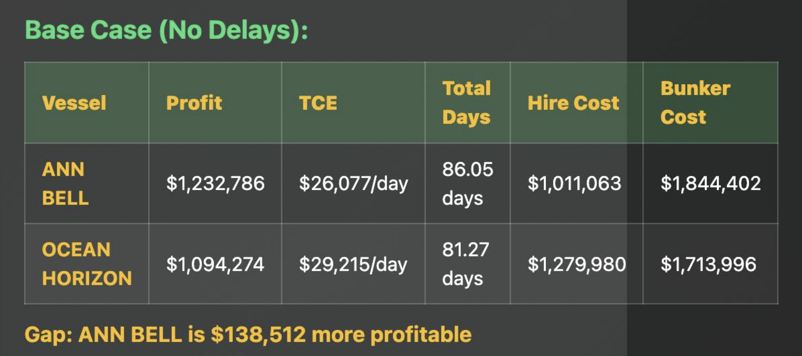
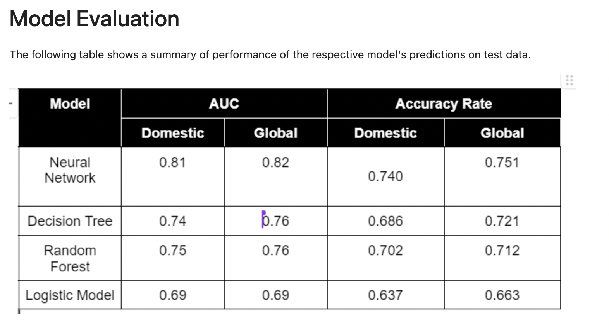
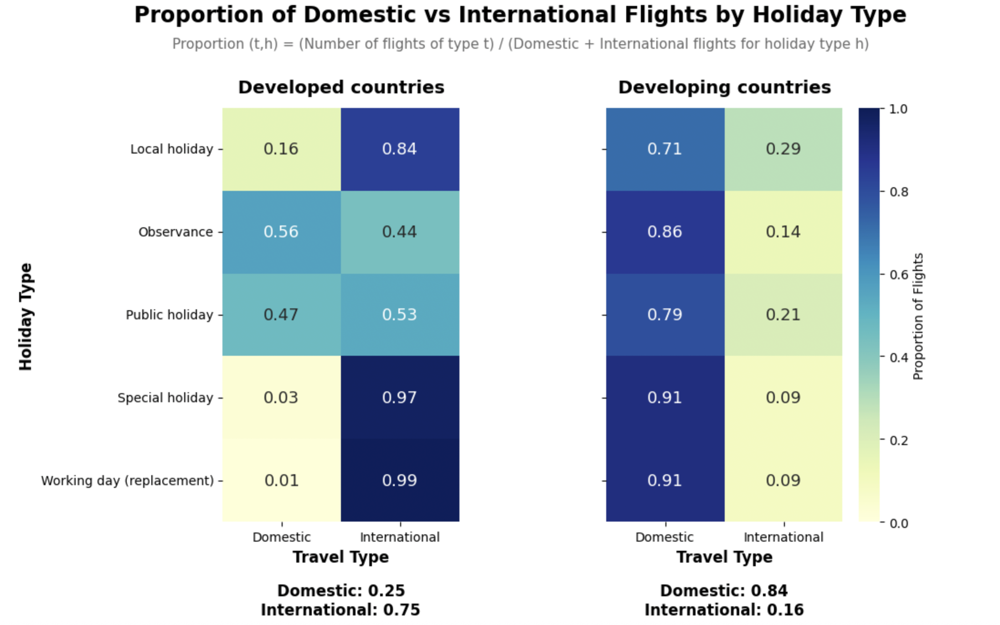

APPLIED ANALYTICS
Applied Data Analytics
at GSK
Supplier quality analytics, data pipelines and workflow automation.
Worked with large operational datasets to support supplier quality reporting, developing standardised data pipelines, recreating KPI visualisations and automating recurring data preparation and reporting workflows.
PROFESSIONAL EXPERIENCEApplied Data Analyst Intern
DATA ANALYTICS
Capesize Deployment
Analysis
Evaluating global vessel deployment opportunities through data.
Developed a data-driven framework to evaluate Capesize vessel deployment opportunities across global cargo routes, combining operational, financial and market variables with freight economics and risk analysis.

MACHINE LEARNING
Corporate Ownership
Classification
Predicting ultimate corporate ownership from structured company data.
Built an end-to-end machine learning classification pipeline on approximately 26,000 observations and more than 80 features, covering preprocessing, feature engineering, model comparison and performance evaluation.

DATA EXPLORATION
Global Air Travel
Analytics
Exploring global travel patterns across countries and time.
Analysed travel and holiday data across approximately 90 countries from 2010 to 2018, identifying geographic and temporal patterns through exploratory analysis and visualisation.
